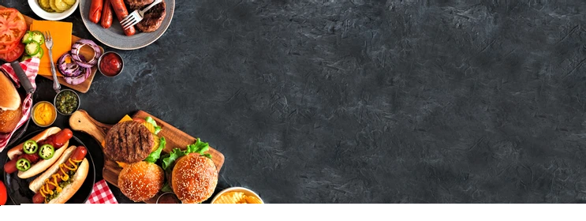

Welcome to Little Lemon!

Little Lemon is owned by two Italian brothers, Mario and Adrian, who moved to the United States to pursue their shared dream of owning a restaurant. To craft the menu, Mario relies on family recipes and his experience as a chef in Italy. Adrian does all the marketing for the restaurant and led the effort to expand the menu beyond classic Italian to incorporate additional cuisines from the Mediterranean region.